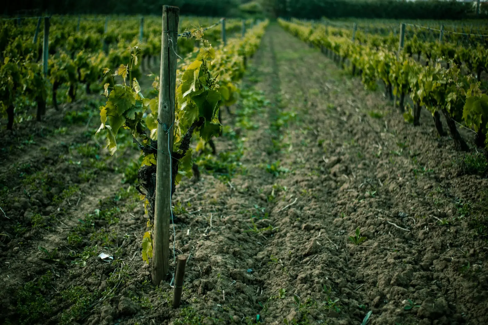
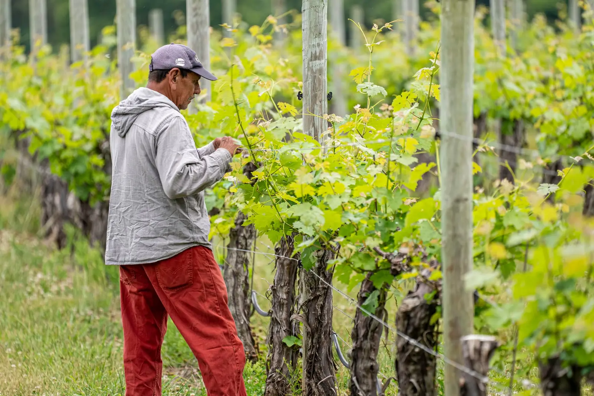
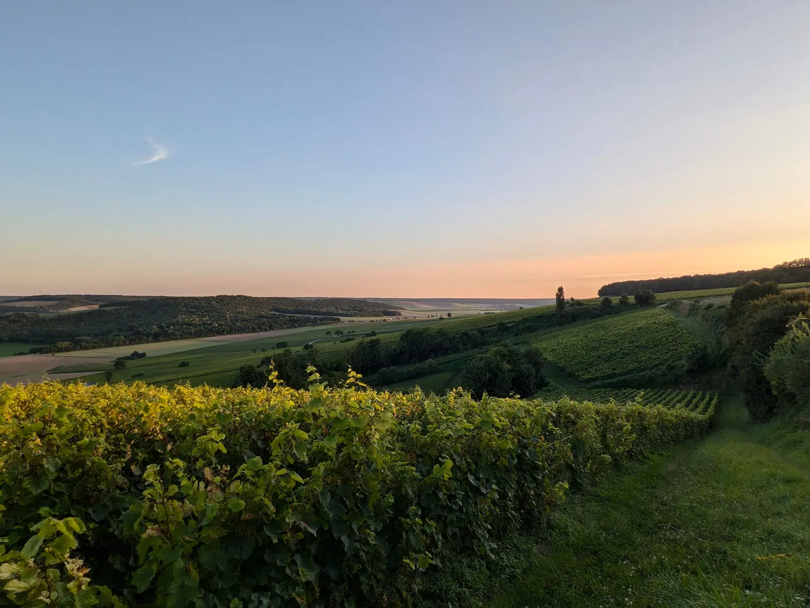

Vigneron à Montlouis-sur-Loire
Des vins vivants,
au cœur des sols.
32 hectares de chenin entre Loire et Cher, cultivés en agriculture de conservation. De père en fils, depuis plusieurs générations.

Quatre terres,
quatre chenins
Depuis 2020, cinq hectares parmi nos parcelles les plus caractéristiques sont vinifiés à part : ce sont les Coulées Douces. Chaque cuvée porte le nom de sa terre.
-
01
Terres Blanches
SecVieilles vignes · argilo-calcaireUn chenin de vignes d'environ 45 ans, sur une parcelle argilo-calcaire d'un peu plus d'un hectare.
→ -
02
Terres de Voiles
TendreMontlouis-sur-LoireLa rondeur du chenin, une pointe de douceur portée par la fraîcheur de la Loire.
→ -
03
Terres de Lunes
Non doséFermenté en fût · 14 mois sur lattesDes bulles fines et une belle vivacité. La première cuvée distinguée du domaine.
→ -
04
Terres Nobles
SecParcelles sélectionnéesNotre chenin le plus ample, issu de parcelles choisies.
→
La gamme compte aussi d'autres cépages et appellations de Touraine.
Toute la gammeSous nos pieds,
un sol qui travaille
Vincent cultive ses vignes en agriculture de conservation : on protège la terre au lieu de la retourner. Une démarche reconnue par les labels Terra Vitis (depuis 2009) et Au Cœur des Sols (depuis 2020).
- 1Couvrir
Le sol n'est jamais laissé nu.
- 2Moins travailler
On préserve la structure et la vie du sol.
- 3Faire tourner
Le regard d'un céréalier, appliqué à la vigne.
Entre les rangs, des plantes semées protègent le sol du soleil et de la pluie, nourrissent la vie souterraine et limitent l'érosion.
Peu travaillée, la terre garde sa structure : vers de terre et champignons font circuler l'air et l'eau jusqu'aux racines.
Les sols typiques de Montlouis, qui donnent au chenin sa tension et sa minéralité.
La pierre blanche de Touraine, dans laquelle sont creusées les caves où mûrissent les vins.
Touchez une couche pour explorer le sol.

J'ai choisi de continuer et de prolonger le travail de ma famille depuis des générations, tout en utilisant les outils d'aujourd'hui.
Mon activité est double : comme mon père, je cultive des céréales et j'exploite le domaine viticole, qui s'est agrandi depuis le début de mon installation. — Vincent Denis
- 1999Vincent reprend le domaine familial
- 2009Certification Terra Vitis
- 2020Au Cœur des Sols et premières Coulées Douces
Nos vins, livrés chez vous
Commandez et réglez en ligne en toute sécurité, ou retirez vos bouteilles au domaine.

Venez déguster au domaine
Nous vous accueillons sur rendez-vous à Montlouis-sur-Loire, à quinze minutes de Tours, pour une dégustation et la vente directe.
02 47 45 07 17- Adresse
- 56 rue de la Pousterie, 37270 Montlouis-sur-Loire
- Portable
- 06 76 92 61 83
- Accueil
- Sur rendez-vous uniquement